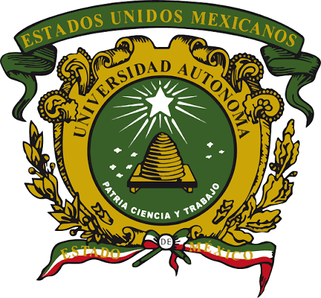
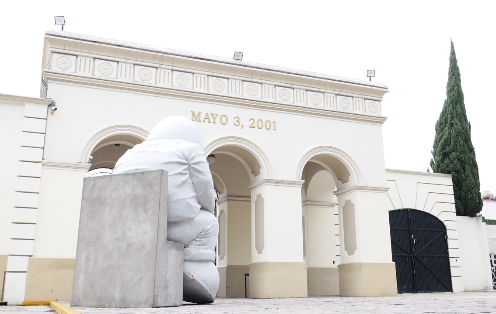
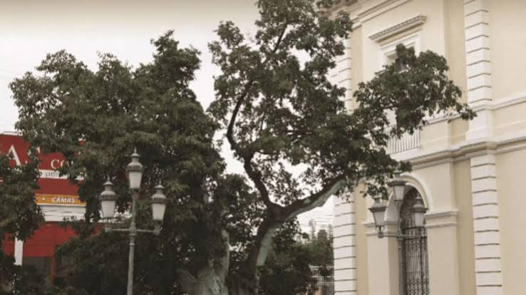
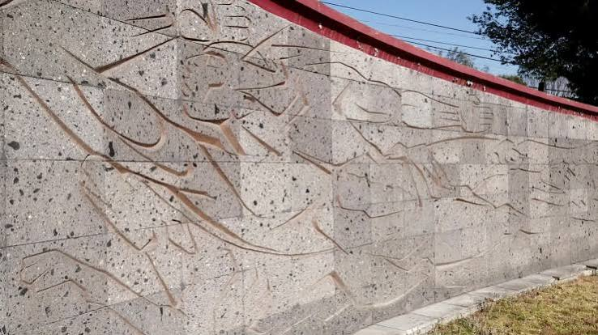
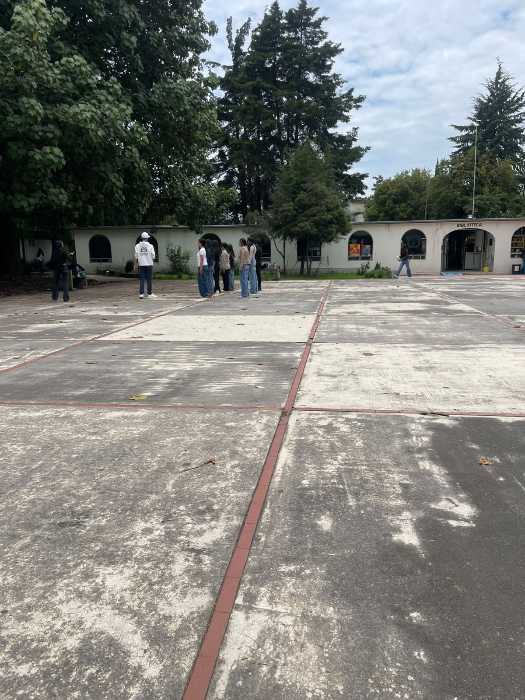
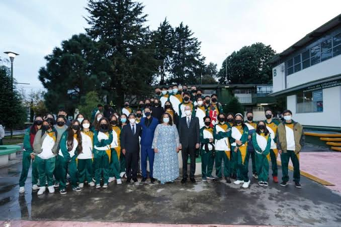

01
Escudo universitario
Es uno de los principales símbolos de identidad de la Universidad Autónoma del Estado de México y representa nuestra pertenencia a ella.
Nuestra historia, nuestra identidad y el orgullo de pertenecer a una gran comunidad.
DESCUBRE NUESTRA HISTORIA →Prepa Neza es mucho más que un espacio de aprendizaje. Es una comunidad donde compartimos experiencias, descubrimos nuestras capacidades y construimos recuerdos que forman parte de nuestra identidad.
Te invitamos a conocer su historia, sus símbolos, sus valores y todo aquello que hace especial a nuestro plantel.

El Plantel Nezahualcóyotl forma parte de la Universidad Autónoma del Estado de México. Su historia se relaciona con el crecimiento de la educación media superior y con las generaciones que han formado parte de su comunidad.
Desde sus inicios, el plantel ha sido un espacio de formación académica, cultural y personal, donde miles de estudiantes han construido experiencias y aprendizajes.
Conoce nuestras fuentes →Elementos que representan nuestra historia, cultura y pertenencia universitaria.

Es uno de los principales símbolos de identidad de la Universidad Autónoma del Estado de México y representa nuestra pertenencia a ella.

Es un símbolo tradicional de la identidad universitaria y representa parte de la historia y las tradiciones de nuestra institución.

El mural esgrafiado dedicado a Nezahualcóyotl es una obra del artista Leopoldo Flores que forma parte del patrimonio artístico del plantel.
Nuestra experiencia también se construye a través de las actividades, amistades y oportunidades que encontramos en el plantel.

✦La biblioteca y los espacios académicos nos permiten investigar, aprender y descubrir nuevos conocimientos.

✧Las experiencias escolares fortalecen la creatividad, la colaboración y el trabajo en equipo.
El arte, las expresiones culturales y las tradiciones enriquecen nuestra vida estudiantil.
El respeto, la inclusión y la solidaridad nos ayudan a construir una comunidad en la que todos podemos participar.
Cada proyecto representa una parte de nuestro aprendizaje, esfuerzo y creatividad durante nuestro recorrido por Cultura Digital.
Cartel digital
Una representación visual de los elementos que conforman nuestra identidad universitaria y el orgullo de pertenecer a Prepa Neza.
EXPLORAR PROYECTO ↗Presentación digital
Un recorrido por la historia, los símbolos, las actividades, los logros y la comunidad de nuestro plantel.
VER PRESENTACIÓN ↗Juego interactivo
Una actividad interactiva que permite aprender y recordar información sobre nuestra institución de manera divertida.
JUGAR AHORA ↗Pertenecer a Prepa Neza significa formar parte de una comunidad con historia, compartir experiencias y contribuir a un entorno de respeto y aprendizaje. Nuestra identidad no solamente está en los símbolos: también está en nuestras acciones.
"Nuestra historia también la escribimos nosotros".La información presentada en este sitio se debe respaldar con fuentes confiables.
Universidad Autónoma del Estado de México. (Año). Título de la fuente consultada. URL
Plantel Nezahualcóyotl. (Año). Documento institucional consultado. URL
Agrega aquí la referencia de la entrevista realizada al personal del plantel.
Incluye los créditos correspondientes a las fotografías y recursos visuales.